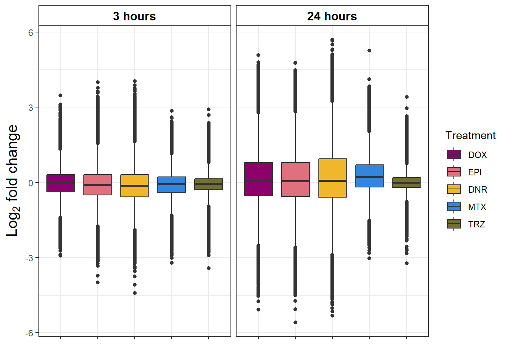
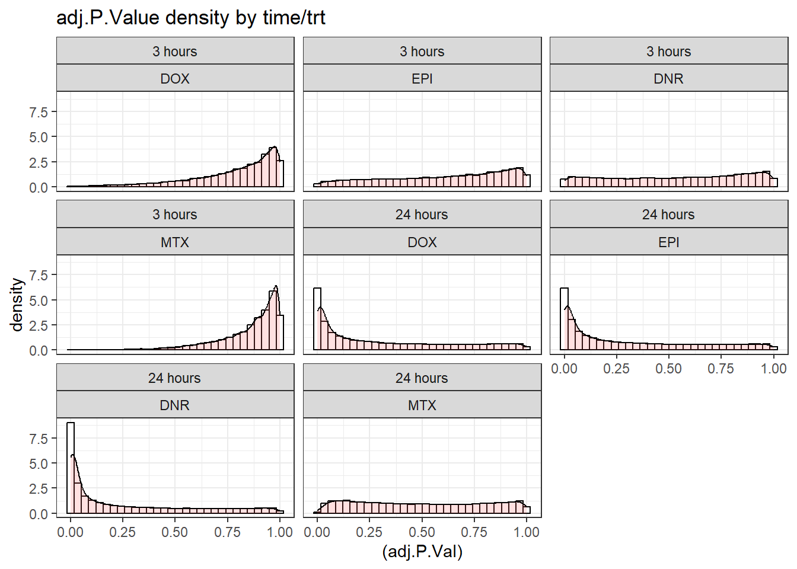
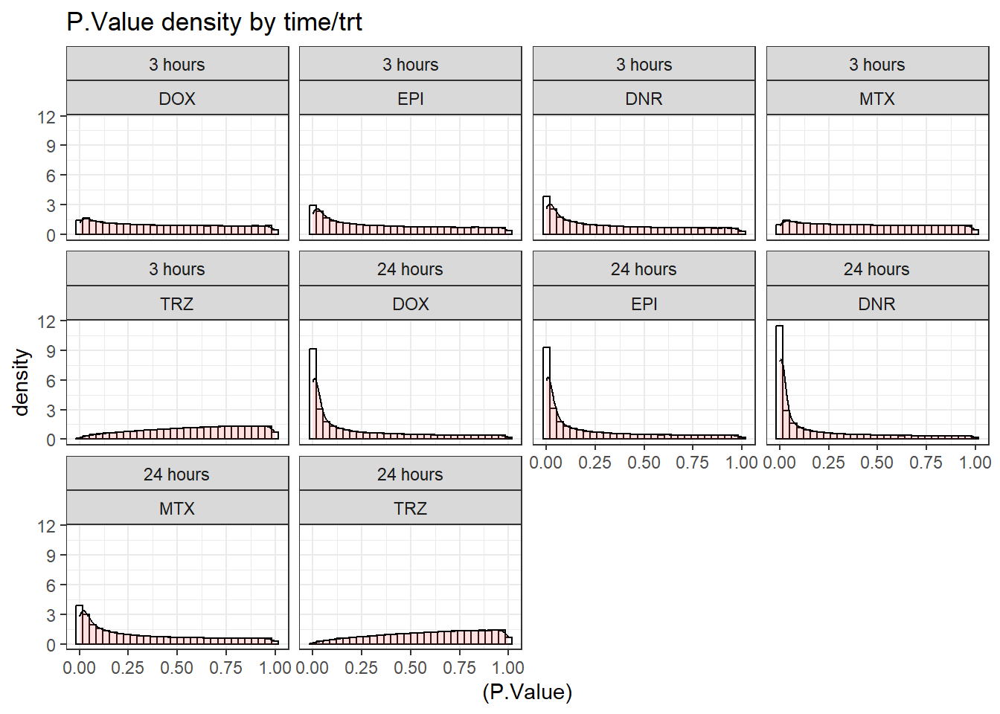

Smaller_set_DAR
ERM
2024-03-22
Last updated: 2024-03-22
Checks: 7 0
Knit directory: ATAC_learning/
This reproducible R Markdown analysis was created with workflowr (version 1.7.1). The Checks tab describes the reproducibility checks that were applied when the results were created. The Past versions tab lists the development history.
Great! Since the R Markdown file has been committed to the Git repository, you know the exact version of the code that produced these results.
Great job! The global environment was empty. Objects defined in the global environment can affect the analysis in your R Markdown file in unknown ways. For reproduciblity it’s best to always run the code in an empty environment.
The command set.seed(20231016) was run prior to running
the code in the R Markdown file. Setting a seed ensures that any results
that rely on randomness, e.g. subsampling or permutations, are
reproducible.
Great job! Recording the operating system, R version, and package versions is critical for reproducibility.
Nice! There were no cached chunks for this analysis, so you can be confident that you successfully produced the results during this run.
Great job! Using relative paths to the files within your workflowr project makes it easier to run your code on other machines.
Great! You are using Git for version control. Tracking code development and connecting the code version to the results is critical for reproducibility.
The results in this page were generated with repository version f6beadb. See the Past versions tab to see a history of the changes made to the R Markdown and HTML files.
Note that you need to be careful to ensure that all relevant files for
the analysis have been committed to Git prior to generating the results
(you can use wflow_publish or
wflow_git_commit). workflowr only checks the R Markdown
file, but you know if there are other scripts or data files that it
depends on. Below is the status of the Git repository when the results
were generated:
Ignored files:
Ignored: .RData
Ignored: .Rhistory
Ignored: .Rproj.user/
Ignored: data/All_merged_peaks.tsv
Ignored: data/EAR_full.bed
Ignored: data/EAR_n45.bed
Ignored: data/ESR_full.bed
Ignored: data/ESR_n45.bed
Ignored: data/FRiP_first_run.txt
Ignored: data/Frip_1_reads.csv
Ignored: data/Frip_2_reads.csv
Ignored: data/Frip_3_reads.csv
Ignored: data/Frip_4_reads.csv
Ignored: data/Frip_5_reads.csv
Ignored: data/Frip_6_reads.csv
Ignored: data/Ind1_75DA24h_dedup_peaks.csv
Ignored: data/Ind1_TSS_peaks.RDS
Ignored: data/Ind1_firstfragment_files.txt
Ignored: data/Ind1_fragment_files.txt
Ignored: data/Ind1_peaks_list.RDS
Ignored: data/Ind1_summary.txt
Ignored: data/Ind2_TSS_peaks.RDS
Ignored: data/Ind2_fragment_files.txt
Ignored: data/Ind2_peaks_list.RDS
Ignored: data/Ind2_summary.txt
Ignored: data/Ind3_TSS_peaks.RDS
Ignored: data/Ind3_fragment_files.txt
Ignored: data/Ind3_peaks_list.RDS
Ignored: data/Ind3_summary.txt
Ignored: data/Ind4_79B24h_dedup_peaks.csv
Ignored: data/Ind4_TSS_peaks.RDS
Ignored: data/Ind4_V24h_fraglength.txt
Ignored: data/Ind4_fragment_files.txt
Ignored: data/Ind4_fragment_filesN.txt
Ignored: data/Ind4_peaks_list.RDS
Ignored: data/Ind4_summary.txt
Ignored: data/Ind5_TSS_peaks.RDS
Ignored: data/Ind5_fragment_files.txt
Ignored: data/Ind5_fragment_filesN.txt
Ignored: data/Ind5_peaks_list.RDS
Ignored: data/Ind5_summary.txt
Ignored: data/Ind6_TSS_peaks.RDS
Ignored: data/Ind6_fragment_files.txt
Ignored: data/Ind6_peaks_list.RDS
Ignored: data/Ind6_summary.txt
Ignored: data/LR_full.bed
Ignored: data/LR_n45.bed
Ignored: data/NR_full.bed
Ignored: data/NR_n45.bed
Ignored: data/aln_run1_results.txt
Ignored: data/anno_ind1_DA24h.RDS
Ignored: data/anno_ind4_V24h.RDS
Ignored: data/background_he.bed
Ignored: data/background_n45.bed
Ignored: data/background_n45_he_peaks.RDS
Ignored: data/cardiac_muscle_FRIP.csv
Ignored: data/cardiomyocyte_FRIP.csv
Ignored: data/cormotif_full_4_run.RDS
Ignored: data/cormotif_full_4_run_he.RDS
Ignored: data/cormotif_full_6_run.RDS
Ignored: data/cormotif_full_6_run_he.RDS
Ignored: data/cormotif_probability_45_list.csv
Ignored: data/cormotif_probability_45_list_he.csv
Ignored: data/cormotif_probability_all_6_list.csv
Ignored: data/cormotif_probability_all_6_list_he.csv
Ignored: data/embryo_heart_FRIP.csv
Ignored: data/filt_Peaks_efit2.RDS
Ignored: data/filt_Peaks_efit2_bl.RDS
Ignored: data/filt_Peaks_efit2_n45.RDS
Ignored: data/first_Peaksummarycounts.csv
Ignored: data/first_run_frag_counts.txt
Ignored: data/high_conf_peak_counts.csv
Ignored: data/high_conf_peak_counts.txt
Ignored: data/high_conf_peaks_bl_counts.txt
Ignored: data/high_conf_peaks_counts.txt
Ignored: data/ind1_DA24hpeaks.RDS
Ignored: data/ind4_V24hpeaks.RDS
Ignored: data/initial_complete_stats_run1.txt
Ignored: data/left_ventricle_FRIP.csv
Ignored: data/mergedPeads.gff
Ignored: data/mergedPeaks.gff
Ignored: data/motif_list_full
Ignored: data/motif_list_n45
Ignored: data/motif_list_n45.RDS
Ignored: data/multiqc_fastqc_run1.txt
Ignored: data/multiqc_fastqc_run2.txt
Ignored: data/multiqc_genestat_run1.txt
Ignored: data/multiqc_genestat_run2.txt
Ignored: data/my_hc_filt_counts.RDS
Ignored: data/my_hc_filt_counts_n45.RDS
Ignored: data/peakAnnoList_1.RDS
Ignored: data/peakAnnoList_2.RDS
Ignored: data/peakAnnoList_3.RDS
Ignored: data/peakAnnoList_4.RDS
Ignored: data/peakAnnoList_5.RDS
Ignored: data/peakAnnoList_6.RDS
Ignored: data/peakAnnoList_full_motif.RDS
Ignored: data/peakAnnoList_n45_motif.RDS
Ignored: data/toplist_6.RDS
Ignored: data/toplist_n45.RDS
Ignored: data/trimmed_seq_length.csv
Ignored: data/unclassified_full.bed
Ignored: data/unclassified_full_set_peaks.RDS
Ignored: data/unclassified_n45.bed
Ignored: data/unclassified_n45_set_peaks.RDS
Ignored: trimmed_Ind1_75DA24h_S7.nodup.splited.bam/
Untracked files:
Untracked: Firstcorr plotATAC.pdf
Untracked: IND1_2_3_6_corrplot.pdf
Untracked: analysis/my_hc_filt_counts.csv
Untracked: code/IGV_snapshot_code.R
Untracked: code/corMotifcustom.R
Untracked: code/just_for_Fun.R
Untracked: code/toplist_assembly.R
Untracked: lcpm_filtered_corplot.pdf
Untracked: log2cpmfragcount.pdf
Untracked: output/cormotif_probability_45_list.csv
Untracked: output/cormotif_probability_all_6_list.csv
Untracked: splited/
Untracked: trimmed_Ind1_75DA24h_S7.nodup.fragment.size.distribution.pdf
Untracked: trimmed_Ind1_75DA3h_S1.nodup.fragment.size.distribution.pdf
Note that any generated files, e.g. HTML, png, CSS, etc., are not included in this status report because it is ok for generated content to have uncommitted changes.
These are the previous versions of the repository in which changes were
made to the R Markdown (analysis/Smaller_set_DAR.Rmd) and
HTML (docs/Smaller_set_DAR.html) files. If you’ve
configured a remote Git repository (see ?wflow_git_remote),
click on the hyperlinks in the table below to view the files as they
were in that past version.
| File | Version | Author | Date | Message |
|---|---|---|---|---|
| html | 0f2a671 | reneeisnowhere | 2024-03-21 | Build site. |
| Rmd | a4b3af1 | reneeisnowhere | 2024-03-21 | adding new pages |
library(tidyverse)
library(ggsignif)
library(cowplot)
library(ggpubr)
library(scales)
# library(sjmisc)
library(kableExtra)
# library(broom)
# library(biomaRt)
library(RColorBrewer)
# library(gprofiler2)
# library(qvalue)
# library(ChIPseeker)
# library("TxDb.Hsapiens.UCSC.hg38.knownGene")
# library("org.Hs.eg.db")
# library(ATACseqQC)
# library(rtracklayer)
library(gridExtra)
library(edgeR)
library(ggfortify)
library(limma)drug_pal <- c("#8B006D","#DF707E","#F1B72B", "#3386DD","#707031","#41B333")
pca_plot <-
function(df,
col_var = NULL,
shape_var = NULL,
title = "") {
ggplot(df) + geom_point(aes_string(
x = "PC1",
y = "PC2",
color = col_var,
shape = shape_var
),
size = 5) +
labs(title = title, x = "PC 1", y = "PC 2") +
scale_color_manual(values = c(
"#8B006D",
"#DF707E",
"#F1B72B",
"#3386DD",
"#707031",
"#41B333"
))
}
pca_var_plot <- function(pca) {
# x: class == prcomp
pca.var <- pca$sdev ^ 2
pca.prop <- pca.var / sum(pca.var)
var.plot <-
qplot(PC, prop, data = data.frame(PC = 1:length(pca.prop),
prop = pca.prop)) +
labs(title = 'Variance contributed by each PC',
x = 'PC', y = 'Proportion of variance')
}
calc_pca <- function(x) {
# Performs principal components analysis with prcomp
# x: a sample-by-gene numeric matrix
prcomp(x, scale. = TRUE, retx = TRUE)
}
get_regr_pval <- function(mod) {
# Returns the p-value for the Fstatistic of a linear model
# mod: class lm
stopifnot(class(mod) == "lm")
fstat <- summary(mod)$fstatistic
pval <- 1 - pf(fstat[1], fstat[2], fstat[3])
return(pval)
}
plot_versus_pc <- function(df, pc_num, fac) {
# df: data.frame
# pc_num: numeric, specific PC for plotting
# fac: column name of df for plotting against PC
pc_char <- paste0("PC", pc_num)
# Calculate F-statistic p-value for linear model
pval <- get_regr_pval(lm(df[, pc_char] ~ df[, fac]))
if (is.numeric(df[, f])) {
ggplot(df, aes_string(x = f, y = pc_char)) + geom_point() +
geom_smooth(method = "lm") + labs(title = sprintf("p-val: %.2f", pval))
} else {
ggplot(df, aes_string(x = f, y = pc_char)) + geom_boxplot() +
labs(title = sprintf("p-val: %.2f", pval))
}
}
x_axis_labels = function(labels, every_nth = 1, ...) {
axis(side = 1,
at = seq_along(labels),
labels = F)
text(
x = (seq_along(labels))[seq_len(every_nth) == 1],
y = par("usr")[3] - 0.075 * (par("usr")[4] - par("usr")[3]),
labels = labels[seq_len(every_nth) == 1],
xpd = TRUE,
...
)
}This page is for DAR analysis using only individuals 1, 2, 3, and 6.
my_hc_filtered_counts_n45 <- readRDS("data/my_hc_filt_counts_n45.RDS")
##3 now have 151,800 high conf peaks
group_n45 <- c( rep(c(1,2,3,4,5,6,7,8,9,10,11,12),4))
group_n45 <- factor(group_n45, levels =c("1","2","3","4","5","6","7","8","9","10","11","12"))
##renaming colnames
efit2_n45 <- readRDS("data/filt_Peaks_efit2_n45.RDS")
##commented out to save time for future processing
group_n45 <- c(rep(c("DNR_24","DNR_3","DOX_24","DOX_3","EPI_24","EPI_3","MTX_24","MTX_3","TRZ_24","TRZ_3","VEH_24", "VEH_3"),4))Evaluation of change in peaks
V.DNR_3.top_n45= topTable(efit2_n45, coef=1, adjust.method="BH", number=Inf, sort.by="p")
V.DOX_3.top_n45= topTable(efit2_n45, coef=2, adjust.method="BH", number=Inf, sort.by="p")
V.EPI_3.top_n45= topTable(efit2_n45, coef=3, adjust.method="BH", number=Inf, sort.by="p")
V.MTX_3.top_n45= topTable(efit2_n45, coef=4, adjust.method="BH", number=Inf, sort.by="p")
V.TRZ_3.top_n45= topTable(efit2_n45, coef=5, adjust.method="BH", number=Inf, sort.by="p")
V.DNR_24.top_n45= topTable(efit2_n45, coef=6, adjust.method="BH", number=Inf, sort.by="p")
V.DOX_24.top_n45= topTable(efit2_n45, coef=7, adjust.method="BH", number=Inf, sort.by="p")
V.EPI_24.top_n45= topTable(efit2_n45, coef=8, adjust.method="BH", number=Inf, sort.by="p")
V.MTX_24.top_n45= topTable(efit2_n45, coef=9, adjust.method="BH", number=Inf, sort.by="p")
V.TRZ_24.top_n45= topTable(efit2_n45, coef=10, adjust.method="BH", number=Inf, sort.by="p")
toplist_full_n45 <- list(V.DNR_3.top_n45, V.DOX_3.top_n45,V.EPI_3.top_n45,V.MTX_3.top_n45,V.TRZ_3.top_n45,V.DNR_24.top_n45, V.DOX_24.top_n45,V.EPI_24.top_n45,V.MTX_24.top_n45,V.TRZ_24.top_n45)
names(toplist_full_n45) <- c("DNR_3", "DOX_3","EPI_3","MTX_3","TRZ_3","DNR_24", "DOX_24","EPI_24","MTX_24","TRZ_24")
# toplist_n45 <-map_df(toplist_full_n45, ~as.data.frame(.x), .id="trt_time")
#
# toplist_n45 <- toplist_n45 %>%
# separate(trt_time, into= c("trt","time"), sep = "_") %>%
# mutate(trt=factor(trt, levels = c("DOX","EPI","DNR","MTX","TRZ"))) %>%
# mutate(time = factor(time, levels = c("3", "24"), labels = c("3 hours", "24 hours")))
toplist_n45 <- readRDS("data/toplist_n45.RDS")toplist_n45 %>%
group_by(time, trt) %>%
mutate(sigcount = if_else(adj.P.Val < 0.05,'sig','notsig'))%>%
count(sigcount) %>%
pivot_wider(id_cols = c(time,trt), names_from=sigcount, values_from=n) %>%
mutate(prop = sig/(sig+notsig)*100) %>%
mutate(prop=if_else(is.na(prop),0,prop)) %>%
ggplot(., aes(x=trt, y= prop))+
geom_col(aes(fill=trt))+
geom_text(aes(label = sprintf("%.2f",prop)),
position=position_dodge(0.9),vjust=-.2 )+
scale_fill_manual(values =drug_pal)+
guides(fill=guide_legend(title = "Treatment"))+
facet_wrap(~time)+#labeller = (time = facettimelabel) )+
theme_bw()+
xlab("")+
ylab("Percentage DAR peaks")+
theme_bw()+
ggtitle("Percent DARs (adj. P value <0.05)")+
scale_y_continuous(expand=expansion(c(0.02,.2)))+
theme(plot.title = element_text(size = rel(1.5), hjust = 0.5),
axis.title = element_text(size = 15, color = "black"),
# axis.ticks = element_line(linewidth = 1.5),
# axis.line = element_line(linewidth = 1.5),
strip.background = element_rect(fill = "transparent"),
axis.text.x = element_text(size = 8, color = "white", angle = 0),
axis.text.y = element_text(size = 8, color = "black", angle = 0),
strip.text.x = element_text(size = 12, color = "black", face = "bold"))
| Version | Author | Date |
|---|---|---|
| 0f2a671 | reneeisnowhere | 2024-03-21 |
toplist_n45 %>%
group_by(time, trt) %>%
ggplot(., aes(x=trt, y=logFC))+
geom_boxplot(aes(fill=trt))+
ggpubr::fill_palette(palette =drug_pal)+
guides(fill=guide_legend(title = "Treatment"))+
# facet_wrap(sigcount~time)+
theme_bw()+
xlab("")+
ylab(expression("Log"[2]*" fold change"))+
theme_bw()+
facet_wrap(~time)+
theme(plot.title = element_text(size = rel(1.5), hjust = 0.5),
axis.title = element_text(size = 15, color = "black"),
# axis.ticks = element_line(linewidth = 1.5),
# axis.line = element_line(linewidth = 1.5),
strip.background = element_rect(fill = "transparent"),
axis.text.x = element_blank(),
strip.text.x = element_text(size = 12, color = "black", face = "bold"))
| Version | Author | Date |
|---|---|---|
| 0f2a671 | reneeisnowhere | 2024-03-21 |
toplist_n45 %>%
group_by(time, trt) %>%
dplyr::filter(trt != "TRZ") %>%
ggplot(., aes( x=(adj.P.Val)))+
geom_histogram(aes(y=..density..), colour="black", fill="white")+
geom_density(alpha=.2, fill="#FF6666")+
theme_bw()+
ggtitle("adj.P.Value density by time/trt")+
facet_wrap(time~trt)
| Version | Author | Date |
|---|---|---|
| 0f2a671 | reneeisnowhere | 2024-03-21 |
toplist_n45 %>%
group_by(time, trt) %>%
# dplyr::filter(trt == "DOX") %>%
ggplot(., aes( x=(P.Value)))+
geom_histogram(aes(y=..density..), colour="black", fill="white")+
geom_density(alpha=.2, fill="#FF6666")+
theme_bw()+
ggtitle("P.Value density by time/trt")+
facet_wrap(time~trt)
| Version | Author | Date |
|---|---|---|
| 0f2a671 | reneeisnowhere | 2024-03-21 |
sessionInfo()R version 4.3.1 (2023-06-16 ucrt)
Platform: x86_64-w64-mingw32/x64 (64-bit)
Running under: Windows 10 x64 (build 19045)
Matrix products: default
locale:
[1] LC_COLLATE=English_United States.utf8
[2] LC_CTYPE=English_United States.utf8
[3] LC_MONETARY=English_United States.utf8
[4] LC_NUMERIC=C
[5] LC_TIME=English_United States.utf8
time zone: America/Chicago
tzcode source: internal
attached base packages:
[1] stats graphics grDevices utils datasets methods base
other attached packages:
[1] ggfortify_0.4.16 edgeR_4.0.16 limma_3.58.1 gridExtra_2.3
[5] RColorBrewer_1.1-3 kableExtra_1.4.0 scales_1.3.0 ggpubr_0.6.0
[9] cowplot_1.1.3 ggsignif_0.6.4 lubridate_1.9.3 forcats_1.0.0
[13] stringr_1.5.1 dplyr_1.1.4 purrr_1.0.2 readr_2.1.5
[17] tidyr_1.3.1 tibble_3.2.1 ggplot2_3.5.0 tidyverse_2.0.0
[21] workflowr_1.7.1
loaded via a namespace (and not attached):
[1] gtable_0.3.4 xfun_0.42 bslib_0.6.1 processx_3.8.4
[5] rstatix_0.7.2 lattice_0.22-5 callr_3.7.5 tzdb_0.4.0
[9] vctrs_0.6.5 tools_4.3.1 ps_1.7.6 generics_0.1.3
[13] fansi_1.0.6 highr_0.10 pkgconfig_2.0.3 lifecycle_1.0.4
[17] farver_2.1.1 compiler_4.3.1 git2r_0.33.0 statmod_1.5.0
[21] munsell_0.5.0 getPass_0.2-4 carData_3.0-5 httpuv_1.6.14
[25] htmltools_0.5.7 sass_0.4.9 yaml_2.3.8 later_1.3.2
[29] pillar_1.9.0 car_3.1-2 jquerylib_0.1.4 whisker_0.4.1
[33] cachem_1.0.8 abind_1.4-5 locfit_1.5-9.9 tidyselect_1.2.1
[37] digest_0.6.35 stringi_1.8.3 labeling_0.4.3 rprojroot_2.0.4
[41] fastmap_1.1.1 grid_4.3.1 colorspace_2.1-0 cli_3.6.2
[45] magrittr_2.0.3 utf8_1.2.4 broom_1.0.5 withr_3.0.0
[49] promises_1.2.1 backports_1.4.1 timechange_0.3.0 rmarkdown_2.26
[53] httr_1.4.7 hms_1.1.3 evaluate_0.23 knitr_1.45
[57] viridisLite_0.4.2 rlang_1.1.3 Rcpp_1.0.12 glue_1.7.0
[61] xml2_1.3.6 svglite_2.1.3 rstudioapi_0.15.0 jsonlite_1.8.8
[65] R6_2.5.1 systemfonts_1.0.6 fs_1.6.3